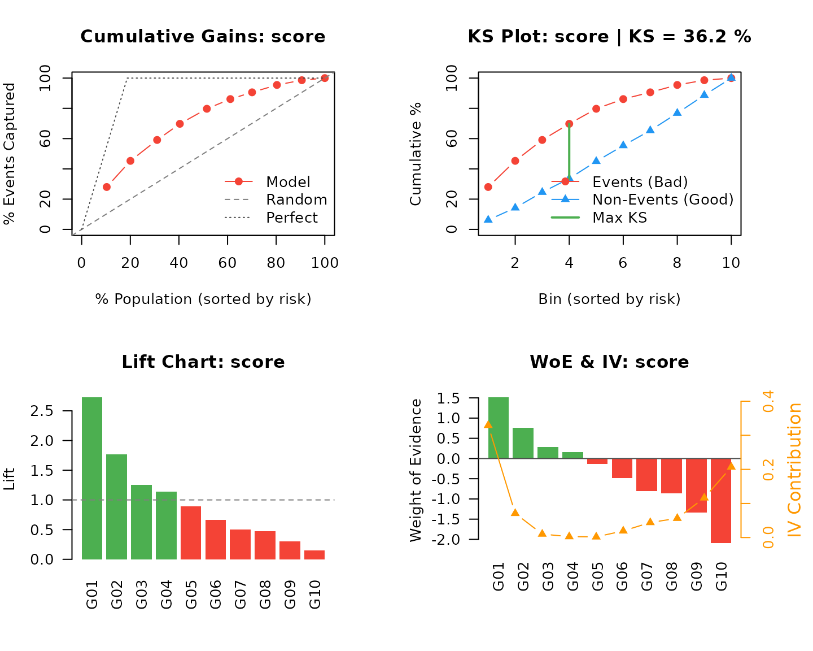

An Industrial Scorecard Pipeline
José Evandeilton Lopes
2026-08-20
Source:vignettes/industrial-pipeline.Rmd
industrial-pipeline.RmdThe practical guide covers what each
function computes. This vignette runs a full origination scorecard the
way it is run in a risk department: a wide base with the pathologies
real bases have, an out-of-time validation window, a
recipes pipeline that can be versioned and shipped, and the
artefacts a model governance committee asks for.
Everything below runs in a few seconds and uses only
recipes, which the package already imports.
library(OptimalBinningWoE)
library(recipes)
set.seed(20260819)The setting
An origination model is built once and lived with for years. The constraints that shape the pipeline are not statistical:
- The base is wide and mostly worthless. Feature stores hand you hundreds of columns. Most carry nothing; a few carry the future.
- Leakage is the default failure mode. Fields populated after booking — collections activity, first-payment status — look spectacular in development and are unavailable at decision time.
- The model must be defensible. Every variable that enters needs a reason, and every variable that was dropped needs one too.
- It must run where the data is. The final artefact is usually SQL in a warehouse, not an R object.
- It must be monitored. A scorecard that was excellent last year and is never re-checked is a liability.
The pipeline below is organised around those five facts.
A realistic origination base
The generator below produces an application base with the pathologies that matter: skewed monetary fields, missing values in three fields, a high-cardinality dealer code with rare levels, two near-duplicates of variables already present, eight pure-noise columns, and one leaky field populated only after the loan was booked.
make_base <- function(n, vintage) {
age <- pmax(18, round(rnorm(n, 41, 13)))
income <- round(exp(rnorm(n, 8.1, 0.55)))
tenure <- pmax(0, round(rexp(n, 1 / 48)))
util <- pmin(1.6, pmax(0, rbeta(n, 2, 4) + rnorm(n, 0, 0.08)))
inq <- rpois(n, 1.3)
dlq <- rpois(n, 0.35)
bureau <- round(rnorm(n, 640, 85))
ltv <- pmin(1.3, pmax(0.1, rnorm(n, 0.72, 0.16)))
region <- sample(c("N", "NE", "CO", "SE", "S"), n, TRUE, c(.09, .27, .07, .42, .15))
channel <- sample(c("branch", "broker", "digital", "partner"), n, TRUE, c(.34, .21, .33, .12))
product <- sample(c("auto", "personal", "payroll", "card"), n, TRUE, c(.28, .35, .22, .15))
occ <- sample(c("salaried", "self_employed", "retired", "public", "informal"), n, TRUE)
housing <- sample(c("owned", "rented", "family", "mortgaged"), n, TRUE, c(.31, .34, .20, .15))
dealer <- sample(c(LETTERS[1:3], paste0("Z", 1:14)), n, TRUE,
c(rep(.30, 3), rep(.10 / 14, 14)))
lp <- -3.80 -
0.019 * (age - 41) -
0.55 * scale(log(income))[, 1] +
1.35 * util +
0.24 * inq + 0.42 * dlq -
0.008 * (bureau - 640) +
1.70 * ltv +
0.30 * (channel == "broker") - 0.22 * (channel == "branch") +
0.55 * (occ == "informal") - 0.40 * (occ == "public") +
0.45 * (housing == "rented") - 0.006 * pmin(tenure, 120)
y <- rbinom(n, 1, plogis(lp))
# a second bureau vendor and a declared-income field: near-duplicates of
# variables already in the base, which is what feature stores actually hand you
bureau_alt <- round(0.80 * bureau + 0.20 * rnorm(n, 640, 85) + rnorm(n, 0, 35))
income_declared <- round(income * exp(rnorm(n, 0, 0.15)))
df <- data.frame(
age, income, tenure_months = tenure, utilisation = util,
inquiries_6m = inq, delinq_12m = dlq, bureau_score = bureau, ltv,
bureau_alt, income_declared,
region, channel, product, occupation = occ, housing,
dealer_code = dealer, stringsAsFactors = FALSE
)
# eight columns of pure noise and four uninformative flags
for (j in 1:8) df[[sprintf("noise_%02d", j)]] <- rnorm(n)
for (j in 1:4) df[[sprintf("flag_%02d", j)]] <- sample(c("Y", "N"), n, TRUE)
# populated only after booking: unavailable at decision time
df$collections_after_booking <- ifelse(y == 1, rpois(n, 2.2), rpois(n, 0.05))
df$utilisation[sample(n, n * 0.12)] <- NA
df$tenure_months[sample(n, n * 0.07)] <- NA
df$occupation[sample(n, n * 0.05)] <- NA
df$vintage <- vintage
df$default <- y
df
}Development is the first half of 2024; validation is the second half, held out by time rather than at random. An out-of-time window is what catches a model that has learned a vintage instead of a risk.
dev <- make_base(20000, "2024H1")
oot <- make_base(8000, "2024H2")
predictors <- setdiff(names(dev), c("default", "vintage"))
c(dev = nrow(dev), oot = nrow(oot), predictors = length(predictors))
#> dev oot predictors
#> 20000 8000 29
c(dev_rate = mean(dev$default), oot_rate = mean(oot$default))
#> dev_rate oot_rate
#> 0.1918 0.1874Missing values become levels
Binning treats a missing value as information, not as a gap to be filled. The convention throughout the package is a numeric sentinel and a character level, which the binner then places in its own bin — so “utilisation was not reported” gets its own WoE instead of borrowing the mean’s.
as_levels <- function(df) {
num <- vapply(df, is.numeric, logical(1))
df[num] <- lapply(df[num], function(v) replace(v, is.na(v), -999))
df[!num] <- lapply(df[!num], function(v) replace(v, is.na(v), "MISSING"))
df
}
dev <- as_levels(dev)
oot <- as_levels(oot)ob_preprocess() does the same job with outlier treatment
attached when a variable needs it; see the practical guide.
Screening at scale
Bin everything first, decide afterwards. Binning all 29 candidates over 20,000 rows takes a fraction of a second, so there is no reason to pre-filter by intuition.
binning <- obwoe(dev, target = "default", feature = predictors,
min_bins = 2, max_bins = 6)
binning
#> Optimal Binning Weight of Evidence
#> ===================================
#>
#> Target: default ( binary )
#> Features processed: 29
#>
#> Results: 29 successful
#>
#> Top features by IV:
#> collections_after_booking: IV = 12.3276 (4 bins, jedi)
#> bureau_score: IV = 0.2695 (6 bins, jedi)
#> income_declared: IV = 0.1989 (6 bins, jedi)
#> bureau_alt: IV = 0.1946 (6 bins, jedi)
#> income: IV = 0.1941 (6 bins, jedi)
#> ... and 24 moreobwoe_select() turns the fitted binning into a decision.
The policy below is a defensible default for origination: drop the
unpredictive band, drop the suspicious band, require monotonicity where
the bin order is intrinsic, and refuse bins holding less than 3% of the
base.
sel <- obwoe_select(
binning,
iv_min = 0.02,
iv_max = 0.50,
require_monotonic = "numeric",
min_bin_pct = 0.03,
sort_by = "iv"
)
head(sel[, c("feature", "type", "n_bins", "total_iv", "iv_class",
"ks", "monotonic", "quality", "selected")], 12)
#> feature type n_bins total_iv iv_class ks monotonic quality selected
#> <char> <char> <int> <num> <fctr> <num> <lgcl> <fctr> <lgcl>
#> 1: bureau_score numerical 6 0.26948 Medium 0.16386 TRUE Excellent TRUE
#> 2: income_declared numerical 6 0.19894 Medium 0.16228 TRUE Excellent TRUE
#> 3: bureau_alt numerical 6 0.19459 Medium 0.13558 TRUE Excellent TRUE
#> 4: income numerical 6 0.19410 Medium 0.16319 TRUE Excellent TRUE
#> 5: occupation categorical 6 0.08244 Weak 0.10269 TRUE Fair TRUE
#> 6: inquiries_6m numerical 4 0.04894 Weak 0.09378 TRUE Fair TRUE
#> 7: utilisation numerical 6 0.04827 Weak 0.09009 TRUE Fair TRUE
#> 8: ltv numerical 6 0.04740 Weak 0.07193 TRUE Fair TRUE
#> 9: delinq_12m numerical 2 0.04733 Weak 0.10143 TRUE Fair TRUE
#> 10: age numerical 6 0.04596 Weak 0.07903 TRUE Fair TRUE
#> 11: tenure_months numerical 5 0.03185 Weak 0.07106 TRUE Fair TRUE
#> 12: housing categorical 4 0.02908 Weak 0.08201 TRUE Fair TRUEThe screening reduces the candidates to a shortlist and records why each of the others went.
table(sel$reason)
#>
#> IV_BELOW_MIN IV_BELOW_MIN;SMALL_BIN IV_SUSPICIOUS;DEGENERATE_BIN
#> 14 1 1
#> OK
#> 13The two rejections worth reading
sel[sel$reason != "OK" & sel$total_iv > 0.05,
c("feature", "total_iv", "iv_class", "n_degenerate_bins", "reason")]
#> feature total_iv iv_class n_degenerate_bins reason
#> <char> <num> <fctr> <int> <char>
#> 1: collections_after_booking 3.829 Suspicious 1 IV_SUSPICIOUS;DEGENERATE_BINcollections_after_booking is the leak, and it is not
subtle: an IV of about 7 against a best-real-variable IV of 0.36, and a
KS above 0.84. No genuine application variable behaves like that. This
is exactly the field that carries a scorecard through development and
destroys it in production, and the default iv_max = 0.50
catches it without anyone having to notice.
n_degenerate_bins is worth reading alongside it: a variable
that also produces a bin with no events or no non-events is separating
the target perfectly somewhere, which is the same diagnosis by another
route.
sel[grepl("SMALL_BIN", sel$reason),
c("feature", "n_bins", "min_bin_pct", "min_bin_count", "reason")]
#> feature n_bins min_bin_pct min_bin_count reason
#> <char> <int> <num> <int> <char>
#> 1: dealer_code 6 0.00595 119 IV_BELOW_MIN;SMALL_BINdealer_code is the high-cardinality field. Its rare
levels cannot support a stable estimate, and min_bin_pct
says so.
shortlist <- sel$feature[sel$selected]
shortlist
#> [1] "bureau_score" "income_declared" "bureau_alt" "income" "occupation"
#> [6] "inquiries_6m" "utilisation" "ltv" "delinq_12m" "age"
#> [11] "tenure_months" "housing" "channel"Evidence for the committee
detail = "full" produces the bin-level table that goes
into the model document: every surviving variable, every bin, with the
counts and rates behind its WoE.
evidence <- obwoe_select(binning, detail = "full")
evidence[evidence$feature == "bureau_score",
c("bin", "count", "pos", "pos_rate", "woe", "iv", "lift")]
#> bin count pos pos_rate woe iv lift
#> <char> <num> <num> <num> <num> <num> <num>
#> 1: (-Inf;533.000000] 2041 762 0.37335 0.92047 0.1100126 1.9465
#> 2: (533.000000;561.000000] 1447 415 0.28680 0.52738 0.0233841 1.4953
#> 3: (561.000000;696.000000] 11416 2159 0.18912 -0.01738 0.0001715 0.9860
#> 4: (696.000000;723.000000] 1807 235 0.13005 -0.46216 0.0166339 0.6780
#> 5: (723.000000;751.000000] 1377 125 0.09078 -0.86583 0.0388497 0.4733
#> 6: (751.000000;+Inf] 1912 140 0.07322 -1.09987 0.0804331 0.3818The event rate falls monotonically across the bureau score, which is the shape the business expects. A variable whose shape contradicts the business is a finding, not a nuisance.
Redundancy
IV ranks variables one at a time. Two variables can both be strong
and carry the same information, and a logistic regression on WoE will
show it as an unstable or sign-flipped coefficient.
obcorr() computes the pairwise correlations in the WoE
space — the space the model actually sees.
woe_dev <- obwoe_apply(dev, binning, keep_original = FALSE)
pairs <- obcorr(woe_dev[, paste0(shortlist, "_woe")], method = "pearson")
head(pairs[order(-abs(pairs$pearson)), ], 5)
#> x y pearson
#> 14 income_declared_woe income_woe 0.82444
#> 2 bureau_score_woe bureau_alt_woe 0.76716
#> 12 bureau_score_woe channel_woe -0.01681
#> 44 occupation_woe utilisation_woe 0.01511
#> 38 income_woe delinq_12m_woe 0.01429Pruning is a greedy pass: for every pair above the cutoff, drop whichever member the screening ranked lower.
prune <- function(pairs, ranking, cutoff = 0.70) {
hits <- pairs[abs(pairs$pearson) >= cutoff, , drop = FALSE]
weaker <- mapply(function(a, b) {
c(a, b)[which.max(c(match(a, ranking), match(b, ranking)))]
}, hits$x, hits$y)
unique(as.character(weaker))
}
ranking <- paste0(shortlist, "_woe")
dropped <- prune(pairs, ranking, cutoff = 0.70)
final_vars <- setdiff(shortlist, sub("_woe$", "", dropped))
dropped
#> [1] "bureau_alt_woe" "income_woe"
c(shortlist = length(shortlist), dropped = length(dropped),
final = length(final_vars))
#> shortlist dropped final
#> 13 2 11The two near-duplicates go, each losing to the member of its pair that the screening ranked higher. Nothing is lost: they carried the same information, and keeping both would have split one variable’s coefficient across two columns.
The pipeline as a recipe
step_obwoe() puts the binning inside a
recipes object. That matters for production: the recipe
learns its cut points from the training data only, and
bake() replays them on any new frame. There is no path by
which validation data can influence the bins.
dev$default_f <- factor(dev$default, levels = c(0, 1))
oot$default_f <- factor(oot$default, levels = c(0, 1))
form <- reformulate(final_vars, response = "default_f")
rec <- recipe(form, data = dev) |>
step_obwoe(all_predictors(), outcome = "default_f",
min_bins = 2, max_bins = 6, bin_cutoff = 0.03,
output = "woe")
prepped <- prep(rec, training = dev)
prepped
#> Optimal Binning WoE [trained, 11 features, total IV=0.8165, algorithm='jedi']tidy() exposes what the step learned — the artefact to
archive alongside the model.
rules <- tidy(prepped, number = 1)
head(rules, 8)
#> # A tibble: 8 × 5
#> terms bin woe iv id
#> <chr> <chr> <dbl> <dbl> <chr>
#> 1 bureau_score (-Inf;506.000000] 1.05 0.0808 obwoe_bpVzn
#> 2 bureau_score (506.000000;533.000000] 0.757 0.0321 obwoe_bpVzn
#> 3 bureau_score (533.000000;561.000000] 0.527 0.0234 obwoe_bpVzn
#> 4 bureau_score (561.000000;723.000000] -0.0709 0.00325 obwoe_bpVzn
#> 5 bureau_score (723.000000;778.000000] -0.840 0.0596 obwoe_bpVzn
#> 6 bureau_score (778.000000;+Inf] -1.41 0.0664 obwoe_bpVzn
#> 7 income_declared (-Inf;1154.000000] 1.06 0.0451 obwoe_bpVzn
#> 8 income_declared (1154.000000;1528.000000] 0.585 0.0233 obwoe_bpVzn
nrow(rules)
#> [1] 54bake() applies it. The development and validation frames
go through the same object, so the transformation is identical by
construction.
train_woe <- bake(prepped, new_data = dev)
oot_woe <- bake(prepped, new_data = oot)
head(train_woe, 3)
#> # A tibble: 3 × 12
#> bureau_score income_declared occupation inquiries_6m utilisation ltv delinq_12m age
#> <dbl> <dbl> <dbl> <dbl> <dbl> <dbl> <dbl> <dbl>
#> 1 1.05 1.06 -0.0442 -0.294 -0.202 0.0132 0.276 -0.0641
#> 2 -0.0709 -0.0765 -0.0248 -0.0570 0.0330 0.0132 -0.150 -0.0641
#> 3 -0.0709 0.512 -0.0442 -0.0570 0.278 0.0132 -0.150 0.207
#> # ℹ 4 more variables: tenure_months <dbl>, housing <dbl>, channel <dbl>, default_f <fct>The model
On WoE predictors, logistic regression is the natural choice: the transform has already linearised each variable against the log-odds, so what remains is weighting.
fit <- glm(default_f ~ ., data = train_woe, family = binomial())
round(coef(summary(fit)), 4)
#> Estimate Std. Error z value Pr(>|z|)
#> (Intercept) -1.443 0.0200 -72.308 0
#> bureau_score 1.105 0.0394 28.051 0
#> income_declared 1.107 0.0492 22.513 0
#> occupation 1.099 0.0672 16.360 0
#> inquiries_6m 1.140 0.0834 13.673 0
#> utilisation 1.107 0.0863 12.821 0
#> ltv 1.184 0.0903 13.117 0
#> delinq_12m 1.140 0.0848 13.444 0
#> age 1.108 0.0928 11.939 0
#> tenure_months 1.189 0.2671 4.451 0
#> housing 1.180 0.1124 10.492 0
#> channel 1.230 0.1148 10.717 0The sign check is the first thing to look at. A WoE of means one more log-odds of risk, so every coefficient should be positive. A negative one means a variable is fighting the rest of the model, almost always through residual correlation.
Coefficients clustering near 1.0 are a good sign too: it says the WoE transform already carried most of the calibration, and the regression is mostly reweighting rather than repairing.
Scorecard points
Risk departments deploy points, not log-odds. The standard scaling fixes a reference score at a reference odds and a points to double the odds (PDO):
where is good-to-bad. The model’s linear predictor is the log-odds of default, the other direction, so the score is . With 600 points at 50:1 odds and 20 points to double them:
pdo <- 20
factor_ <- pdo / log(2)
offset_ <- 600 - factor_ * log(50)
to_score <- function(link) round(offset_ - factor_ * link)
dev$score <- to_score(predict(fit, newdata = train_woe, type = "link"))
oot$score <- to_score(predict(fit, newdata = oot_woe, type = "link"))
summary(dev$score)
#> Min. 1st Qu. Median Mean 3rd Qu. Max.
#> 415 517 537 537 556 650Because the model is linear in WoE, the points decompose additively per bin, which is what makes a scorecard a table a branch officer can read.
lead_var <- final_vars[1]
per_bin <- rules[rules$terms == lead_var, c("bin", "woe")]
per_bin$points <- round(-factor_ * coef(fit)[[lead_var]] * per_bin$woe)
lead_var
#> [1] "bureau_score"
per_bin
#> # A tibble: 6 × 3
#> bin woe points
#> <chr> <dbl> <dbl>
#> 1 (-Inf;506.000000] 1.05 -33
#> 2 (506.000000;533.000000] 0.757 -24
#> 3 (533.000000;561.000000] 0.527 -17
#> 4 (561.000000;723.000000] -0.0709 2
#> 5 (723.000000;778.000000] -0.840 27
#> 6 (778.000000;+Inf] -1.41 45Validation
Rank ordering out of time
gains_oot <- obwoe_gains(oot, target = "default", feature = "score",
use_column = "direct", n_groups = 10, sort_by = "bin")
gains_oot
#> Gains Table: score
#> ==================================================
#>
#> Observations: 8000 | Bins: 10
#> Total IV: 0.8580
#>
#> Performance Metrics:
#> KS Statistic: 36.19%
#> Gini Coefficient: 48.78%
#> AUC: 0.7439
#>
#> bin count pos_rate woe iv cum_pos_pct ks lift
#> G01 823 51.03% 1.5085 0.3291 28.0% 21.8% 2.72
#> G02 781 33.16% 0.7663 0.0709 45.3% 31.1% 1.77
#> G03 878 23.58% 0.2911 0.0102 59.1% 34.6% 1.26
#> G04 748 21.39% 0.1656 0.0027 69.8% 36.2% 1.14
#> G05 889 16.76% -0.1355 0.0020 79.7% 34.7% 0.89
#> G06 773 12.42% -0.4862 0.0195 86.1% 30.7% 0.66
#> G07 715 9.37% -0.8020 0.0441 90.6% 25.2% 0.50
#> G08 818 8.92% -0.8558 0.0564 95.5% 18.6% 0.48
#> G09 819 5.74% -1.3317 0.1164 98.6% 9.9% 0.31
#> G10 756 2.78% -2.0882 0.2068 100.0% 0.0% 0.15Three things to check, in order. The event rate must fall monotonically from the worst decile to the best — a break means the score does not rank. KS and Gini must be close to their development values. And the top decile’s lift is the number the business will quote.
gains_dev <- obwoe_gains(dev, target = "default", feature = "score",
use_column = "direct", n_groups = 10, sort_by = "bin")
data.frame(
sample = c("development", "out-of-time"),
ks = round(c(gains_dev$metrics$ks, gains_oot$metrics$ks), 2),
gini = round(c(gains_dev$metrics$gini, gains_oot$metrics$gini), 2),
auc = round(c(gains_dev$metrics$auc, gains_oot$metrics$auc), 4)
)
#> sample ks gini auc
#> 1 development 36.38 49.04 0.7452
#> 2 out-of-time 36.19 48.78 0.7439A drop of more than a few points from development to out-of-time is the usual signature of overfitting; holding steady, as here, is what a stable model looks like.
op <- par(mfrow = c(2, 2), mar = c(4, 4, 2, 1))
plot(gains_oot, type = "cumulative")
plot(gains_oot, type = "ks")
plot(gains_oot, type = "lift")
plot(gains_oot, type = "woe_iv")
par(op)Population stability
PSI compares the distribution of a variable between two periods:
which is the same Jeffreys divergence that defines IV, applied to two vintages of one variable instead of to two classes. The conventional reading is stable, – worth watching, act.
psi <- function(p, q) {
p <- pmax(p, 1e-6)
q <- pmax(q, 1e-6)
sum((p - q) * log(p / q))
}
share <- function(x, levels) as.numeric(table(factor(x, levels))) / length(x)
bins_dev <- obwoe_apply(dev, binning, keep_original = FALSE)
bins_oot <- obwoe_apply(oot, binning, keep_original = FALSE)
psi_vars <- vapply(final_vars, function(v) {
levels <- binning$results[[v]]$bin
psi(share(bins_dev[[paste0(v, "_bin")]], levels),
share(bins_oot[[paste0(v, "_bin")]], levels))
}, numeric(1))
score_cuts <- c(-Inf, quantile(dev$score, seq(0.1, 0.9, 0.1)), Inf)
psi_score <- psi(share(cut(dev$score, score_cuts), levels(cut(dev$score, score_cuts))),
share(cut(oot$score, score_cuts), levels(cut(dev$score, score_cuts))))
psi_table <- data.frame(
variable = c("SCORE", final_vars),
psi = round(c(psi_score, psi_vars), 4),
row.names = NULL
)
psi_table <- psi_table[order(-psi_table$psi), ]
row.names(psi_table) <- NULL
psi_table
#> variable psi
#> 1 ltv 0.0022
#> 2 bureau_score 0.0017
#> 3 utilisation 0.0014
#> 4 SCORE 0.0012
#> 5 income_declared 0.0010
#> 6 age 0.0008
#> 7 housing 0.0007
#> 8 occupation 0.0006
#> 9 inquiries_6m 0.0004
#> 10 delinq_12m 0.0004
#> 11 tenure_months 0.0002
#> 12 channel 0.0002Comparing bin shares rather than raw quantiles is deliberate: the bins are what the model consumes, the comparison works for numerical and categorical variables alike, and a shift that does not cross a cut point is a shift the model never sees.
Both vintages come from the same generator here, so everything is stable by construction. In production this table is the monthly monitoring report, and the score’s own PSI is the headline.
Deployment
To the warehouse
The scoring lives where the data lives. obwoe_sql()
writes the WoE transformation as SQL that reproduces bake()
exactly.
sql <- obwoe_sql(
binning,
table = "risk.applications",
features = final_vars,
keep_columns = c("application_id", "vintage"),
dialect = "postgres",
style = "view",
view_name = "risk.v_application_woe"
)
writeLines(head(strsplit(as.character(sql), "\n")[[1]], 28))
#> -- ---------------------------------------------------------------
#> -- Weight of Evidence transformation
#> -- Generated by OptimalBinningWoE 1.13.1
#> -- Algorithm(s): jedi
#> -- Dialect: postgres
#> -- Interval convention: (lower, upper] -- upper bound inclusive
#> -- Variables: 11
#> --
#> -- Variable Type Bins IV
#> -- bureau_score numerical 6 0.26948
#> -- income_declared numerical 6 0.19894
#> -- occupation categorical 6 0.08242
#> -- inquiries_6m numerical 4 0.04894
#> -- utilisation numerical 6 0.04827
#> -- ltv numerical 6 0.04740
#> -- delinq_12m numerical 2 0.04733
#> -- age numerical 6 0.04596
#> -- tenure_months numerical 5 0.03185
#> -- housing categorical 4 0.02907
#> -- channel categorical 4 0.02778
#> -- ---------------------------------------------------------------
#> CREATE OR REPLACE VIEW risk.v_application_woe AS
#> SELECT
#> application_id,
#> vintage,
#> CASE
#> WHEN bureau_score IS NULL THEN 0
#> WHEN bureau_score <= 533 THEN 0.920469144302839The intervals follow the same half-open
convention as bake(), cut points are written at full
round-trip precision, and every expression opens with an explicit
IS NULL branch — because NULL <= 5 is
NULL in SQL, not FALSE, and a missing value
would otherwise fall through to ELSE.
Write it out and hand it to the data engineering team:
obwoe_sql(binning, table = "risk.applications", features = final_vars,
dialect = "postgres", file = "woe_transform.sql")The linear part goes with it as a small coefficient table:
data.frame(
variable = names(coef(fit)),
beta = round(as.numeric(coef(fit)), 6),
row.names = NULL
)
#> variable beta
#> 1 (Intercept) -1.443
#> 2 bureau_score 1.105
#> 3 income_declared 1.107
#> 4 occupation 1.099
#> 5 inquiries_6m 1.140
#> 6 utilisation 1.107
#> 7 ltv 1.184
#> 8 delinq_12m 1.140
#> 9 age 1.108
#> 10 tenure_months 1.189
#> 11 housing 1.180
#> 12 channel 1.230To R
For batch scoring in R, the recipe is the artefact. Save it with the coefficients and the screening decisions so the model can be reproduced and audited later.
artefact <- list(
recipe = prepped,
coefficients = coef(fit),
scaling = c(factor = factor_, offset = offset_),
screening = sel,
built_on = Sys.Date(),
package = as.character(utils::packageVersion("OptimalBinningWoE"))
)
saveRDS(artefact, "scorecard_v1.rds")
score_batch <- function(new_data, artefact) {
woe <- bake(artefact$recipe, new_data = new_data)
lp <- as.numeric(cbind(1, as.matrix(woe[names(artefact$coefficients)[-1]])) %*%
artefact$coefficients)
round(artefact$scaling[["offset"]] - artefact$scaling[["factor"]] * lp)
}Pinning the package version matters: bin boundaries are part of the model, and a model that cannot be reproduced cannot be defended.
Tuning with tidymodels
step_obwoe() is tunable, so
max_bins, min_bins, bin_cutoff
and even the algorithm can be tuned by cross-validation. The block below
is not evaluated here because it needs the Suggested tidymodels
stack.
library(tidymodels)
rec_tune <- recipe(form, data = dev) |>
step_obwoe(all_predictors(), outcome = "default_f",
max_bins = tune(), bin_cutoff = tune())
wf <- workflow() |>
add_recipe(rec_tune) |>
add_model(logistic_reg() |> set_engine("glm"))
grid <- grid_regular(obwoe_max_bins(range = c(3L, 10L)),
obwoe_bin_cutoff(range = c(0.01, 0.10)),
levels = 4)
folds <- vfold_cv(dev, v = 5, strata = default_f)
tuned <- tune_grid(wf, resamples = folds, grid = grid,
metrics = metric_set(roc_auc))
final_wf <- finalize_workflow(wf, select_best(tuned, metric = "roc_auc"))
final_fit <- fit(final_wf, data = dev)Two cautions. Cross-validating the binning is the correct thing to do
— binning is supervised, so cut points chosen on the full sample leak
the target — and it is what step_obwoe() inside a
workflow() gives you for free. But more bins almost always
raise in-sample AUC, so tune against a metric on held-out folds and keep
max_bins modest: a scorecard with twelve bins per variable
is not a scorecard anyone will sign.
Governance checklist
The pipeline above produces, in order, everything a model document needs:
| Question | Artefact |
|---|---|
| Which variables were considered? |
sel, one row per candidate |
| Why was each one dropped? |
sel$reason, sel$reason_desc
|
| Is each variable’s shape defensible? | obwoe_select(detail = "full") |
| Is the model free of leakage? |
IV_SUSPICIOUS fires above 0.50 |
| Are the predictors independent? |
obcorr() on the WoE space |
| Do the coefficients make sense? | all positive on WoE predictors |
| Does it rank out of time? | gains table on the held-out vintage |
| Will it stay stable? | PSI by variable and on the score |
| Can it be reproduced? | the prepped recipe plus the package version |
| Can it be deployed? | obwoe_sql() |
See also
- Optimal Binning and Weight of Evidence: A Practical Guide — the quantities, reading a gains table, choosing an algorithm.
-
?obwoe_selectfor the full rule set and reason codes. -
?step_obwoefor the recipe step, includingtunable()support. -
?obwoe_sqlfor the SQL contract and the supported dialects.
sessionInfo()
#> R version 4.6.1 (2026-06-24)
#> Platform: x86_64-pc-linux-gnu
#> Running under: Ubuntu 24.04.4 LTS
#>
#> Matrix products: default
#> BLAS: /usr/lib/x86_64-linux-gnu/openblas-pthread/libblas.so.3
#> LAPACK: /usr/lib/x86_64-linux-gnu/openblas-pthread/libopenblasp-r0.3.26.so; LAPACK version 3.12.0
#>
#> locale:
#> [1] LC_CTYPE=C.UTF-8 LC_NUMERIC=C LC_TIME=C.UTF-8 LC_COLLATE=C.UTF-8
#> [5] LC_MONETARY=C.UTF-8 LC_MESSAGES=C.UTF-8 LC_PAPER=C.UTF-8 LC_NAME=C
#> [9] LC_ADDRESS=C LC_TELEPHONE=C LC_MEASUREMENT=C.UTF-8 LC_IDENTIFICATION=C
#>
#> time zone: UTC
#> tzcode source: system (glibc)
#>
#> attached base packages:
#> [1] stats graphics grDevices utils datasets methods base
#>
#> other attached packages:
#> [1] recipes_1.3.3 dplyr_1.2.1 OptimalBinningWoE_1.13.1
#>
#> loaded via a namespace (and not attached):
#> [1] xfun_0.60 bslib_0.12.0 lattice_0.22-9 vctrs_0.7.3
#> [5] tools_4.6.1 generics_0.1.4 parallel_4.6.1 tibble_3.3.1
#> [9] pkgconfig_2.0.3 Matrix_1.7-5 data.table_1.18.4 RColorBrewer_1.1-3
#> [13] desc_1.4.3 lifecycle_1.0.5 compiler_4.6.1 farver_2.1.2
#> [17] textshaping_1.0.5 codetools_0.2-20 DiceDesign_1.10 htmltools_0.5.9
#> [21] class_7.3-23 sass_0.4.10 yaml_2.3.12 prodlim_2026.03.11
#> [25] pillar_1.11.1 pkgdown_2.2.1 jquerylib_0.1.4 MASS_7.3-65
#> [29] cachem_1.1.0 gower_1.0.2 rpart_4.1.27 parallelly_1.48.0
#> [33] lava_1.9.2 dials_1.4.4 tidyselect_1.2.1 digest_0.6.39
#> [37] future_1.75.0 purrr_1.2.2 listenv_1.0.0 splines_4.6.1
#> [41] fastmap_1.2.0 grid_4.6.1 cli_3.6.6 magrittr_2.0.5
#> [45] survival_3.8-6 utf8_1.2.6 future.apply_1.20.2 withr_3.0.3
#> [49] scales_1.4.0 lubridate_1.9.5 timechange_0.4.0 rmarkdown_2.31
#> [53] globals_0.19.1 otel_0.2.0 nnet_7.3-20 timeDate_4052.112
#> [57] ragg_1.5.2 evaluate_1.0.5 knitr_1.51 hardhat_1.4.3
#> [61] rlang_1.3.0 Rcpp_1.1.2 glue_1.8.1 ipred_0.9-15
#> [65] jsonlite_2.0.0 R6_2.6.1 systemfonts_1.3.2 fs_2.1.0